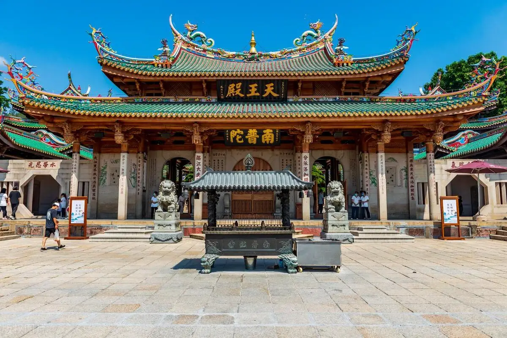
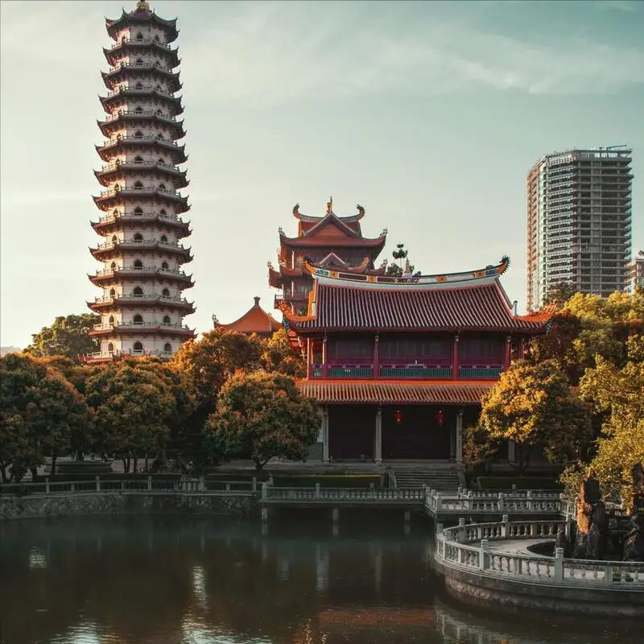
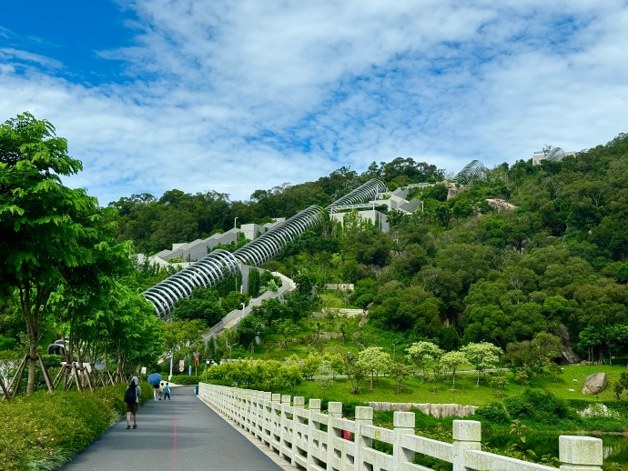
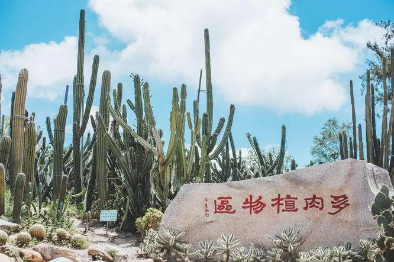
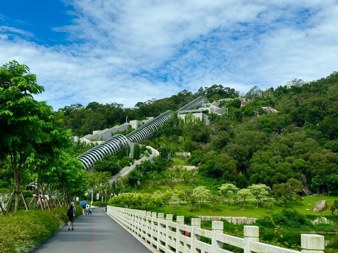
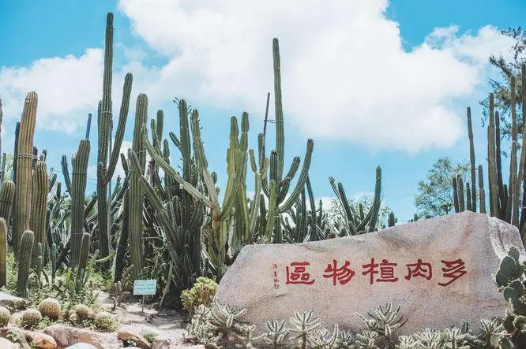

Nanputuo Temple
 
The Nanputuo Temple was first built in the late Tang Dynasty. It is one of the sixth batch of provincial-level cultural relics protection unit in Fujian Province.
Xiamen(also known as Amoy) is a coastline city in
Fujian,
China.
Its total area is 1700.61 square kilometers, and it faces the
Taiwan Strait. Xiamen is famously called "The Egret Island", because
its environment is very clean and many Egrets live in Xiamen.
Gulangyu Island is the most famous touring spot in Xiamen, it is
known as the "Island of Music."Other famous touring spots in Xiamen
include The Xiamen Botanical Garden, The Mountain & Sea Trail, The
Twin Tower, and The Sea Pearl Tower. Some famous foods in Xiamen
include oyster omelets and Sha Cha Noodles.
The third picture is about the Bagua Building in the Gulangyu Island. It has been through four investment groups, and was built into China's only organ Museum in 2005.
The Nanputuo Temple was first built in the late Tang Dynasty. It is one of the sixth batch of provincial-level cultural relics protection unit in Fujian Province.
The Mountain & Sea Trail is a beautiful trail that runs through the whole Xiamen City. You can view both the beach and the mountain on the trail.
 



The Xiamen Botanical Garden has a very long escalator in the southern Gate(look at picture two), the esclator has six sections. There is a viewing platform on top of every section.
The Sea Pearl Tower is a weather forcast station on Huwei Mountain. There are many cultural exhibits on the 18th floor, and you can also view beautiful scenery on the 19th floor.
The Xiamen Science & Technology Museum has lots of different display section, like the mars section, the robot section and the ocean section. It is a fun place to visit.
The Twin Tower of Xiamen is a good place for viewing scenery, touring, dining, relaxation, and entertainment. It is Xiamen's landmark.


Xiamen is a good place for both vacation and relaxation.
If you want to find a good place to spend your vacation,
Xiamen has lots of wonderful touring attractions and good hotels.
If you want to find a place to relax yourself from the tiredness
of work, Xiamen has cozy hot spring hotels like the Riyuegu
Hot Spring Hotel. Xiamen also has beautiful vacation hotels
by the beach like the Asia Gulf Hotel where you can relax
yourselves.
So why wait? Come to Xiamen and have a great trip!
Visit the Gulangyu Island on day one. The Gulangyu Island has
many touring spots like the Sunlight Rock, the Shu Zhuang Garden,
the Bright Moon Garden, the Zheng Chenggong Memorial Hall, the
Drum Wave Stone, the Bagua Building and the Underwater World.
You can get to the Gulangyu Island by taking a ferry boat to
Gulangyu Island at Xiamen International Cruise Center. If you want
to spend a night on Gulangyu Island, you can go to the Marine
Garden Hotel on Gulangyu Island. Or you can simply return to Xiamen
City in the afternoon or evening.
You can visit the Nanputuo Temple in the morning of day two. The
Nanputuo Temple is located in the southeast of Xiamen Island,
the temple has a floor area of 258 thousand square meters.
The Nanputuo Temple is surrounded by the Wulao Peaks, there is even
a Buddhist College inside it.
In the afternoon, you can go to the Mountain & Sea Trail. You can
see beautiful sunsets and spectacular views on the trail. The sun
usually sets around 6:40pm in summer, and 5:40 in winter.
If you're on time you will be able to see the spectacular view of
the sun falling into the sea. But the view could also be the
sun falling into the mountains depending on the position you're at.
Viewing Tips: if you want to see the view of the sun falling into
the sea, you need to be in the lower part of the trail. (But take
note that you might not see the sunset due to where the sun is
facing)
On the morning of day three, you can visit the Xiamen Botanical
Garden. The Xiamen Botanical Garden has a very long escalator
in the southern Gate, the esclator has six sections. There is a
viewing platform on top of every section.
The botanical garden has many different zones, like the rainforest
zone and succulents zone. There are many different type of
succulents in the succulents zone, it's one of the most famous
zone in the botanical garden. My personal favorite is the peculiar
plants zone, the are many interesting plants inside this zone, like
the pitcher plant.(A canivorous plant that eats insects, also known
as the common nepenthes)
The botanical garden is very large, so you need to take the
sightseeing car to get from one zone to another.
In the afternoon, you can visit the Sea Pearl Tower.
The Sea Pearl Tower is a weather forecast station on Huwei Mountain.
There are many cultural exhibits on the eighteenth floor,
and you can also view beautiful scenery on the nineteenth floor.
There is also a spherical cinema and a weather museum beside the
Sea Pearl Tower. The spherical cinema creates an effect so real
that it makes you be personally on the scene, and the cinema does
it by its rotatable screen and its realistic sound effect.
The Xiamen Seaview Resort Hotel is a five star hotel, it has a
floor area of a million square meters. With the mountains behind and
the sea in front, the hotel has a beautiful and relaxing
environment.
The Xiamen Seaview Resort Hotel is packed with eighteen swimming
pools. The hotel has many different kinds of plants inside its
bamboo garden, like the chorisia speciosa, the buddha belly plant,
and the cacti.
The Asia Gulf Hotel is located in the east coast of Xiamen Island, it has a floor area about 60 thousand square meters. The hotel has a beautiful sea views and a big out door swimming pool. There is also a beautiful beach outside the hotel where guests can play on.
The Marine Garden Hotel is circled by three sides of beaches,
the hotel has many different facilities like the business center,
dining room and free parking lot. The hotel also offers lots
of services like wedding service and luggage storage.
Another recommended hotel on the Gulangyu Island is the Hillton
hotel.
The Xiamen Conrad Hotel is in the 37th to 54th floor of the
Xiamen Shimao Strait Tower(Twin Tower), Building B. The Xiamen
Conrad Hotel has entertainment facilities like a 24-hour fitness
center and a 25 meters indoor swimming pool.
The hotel also has an meeting space of over 2000 square meters
including eight multi-function room and a banquet hall of
760 square meters.
The Xiamen Marriott Hotel is located in the Huli District, Taiwan Street. The hotel has three outdoor swimming pool and one indoor swimming pool, the hotel also has a fitness center, and a children's club.
The Portman Seven Stars Bay Hotel is a coastal resort hotel in Xiamen. The hotel has a floor area of 200 thousand square meters. The hotel has lots of different facilities like the Chinese Restaurant, the Beer Bar, the indoor swimming pool, an infinity pool, the rock-climbing center, the Spa center, and the chess and card room.
The Xiamen Meridien Hotel is a hotel that I personally recommend.
The hotel has a beautiful mountain view, a children's park, a
banquet hall of over 2000 square meters, and a beautiful backyard
with a lake and a waterfall.
The hotel has many restaurant, but the hotel's buffet is still my
most recommended. The hotel also has a gym, a indoor swimming pool,
and a Spa center.
The Xiamen Westin Hotel is located in the Center of Xiamen City. The hotel has leisure facilities like a Spa center and a fitness center. The hotel also has a meeting space of over 1500 square meters, a banquet hall, and a Gulangyu Multi-function Room.
The Xiamen Marco Polo Hotel is located beside the Yundang Lake. The Hotel has a beautiful lake view, a gym, a swimming pool, a excutive lounge, multiple restaurants, and bars. The hotel is in the Xiamen Financial Center, facing the Bay Park.
The Xiamen Kempinski Hotel is located in the Center of Xiamen
City. The hotel has a beautiful lake view because it's beside the
Yundang Lake. The hotel has a health center, a Spa center, and a
banquet hall of 2600 square meters.
The hotel's dining is also good, there are many different
restaurants in the hotel, like the Yue Fu Restaurant, the lobby bar,
and a cafe on the second floor.
The Xiamen Waldorf Hotel is only eight kilometers from the Gaoqi Airport in Xiamen. The hotel has facilities like a fitness center, a Spa center with five Spa rooms, a sauna room, a steam room, and an infinity pool. The hotel also has five restaurants and a bar to provide many dining choices for the hotel guests.